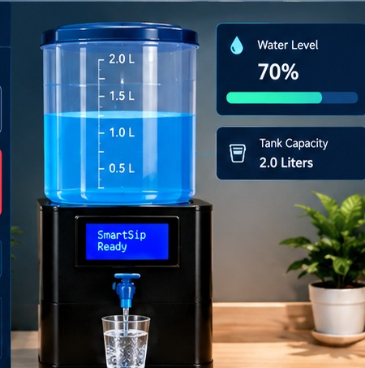
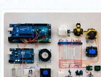
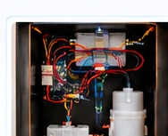
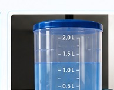
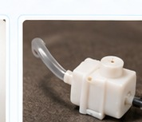
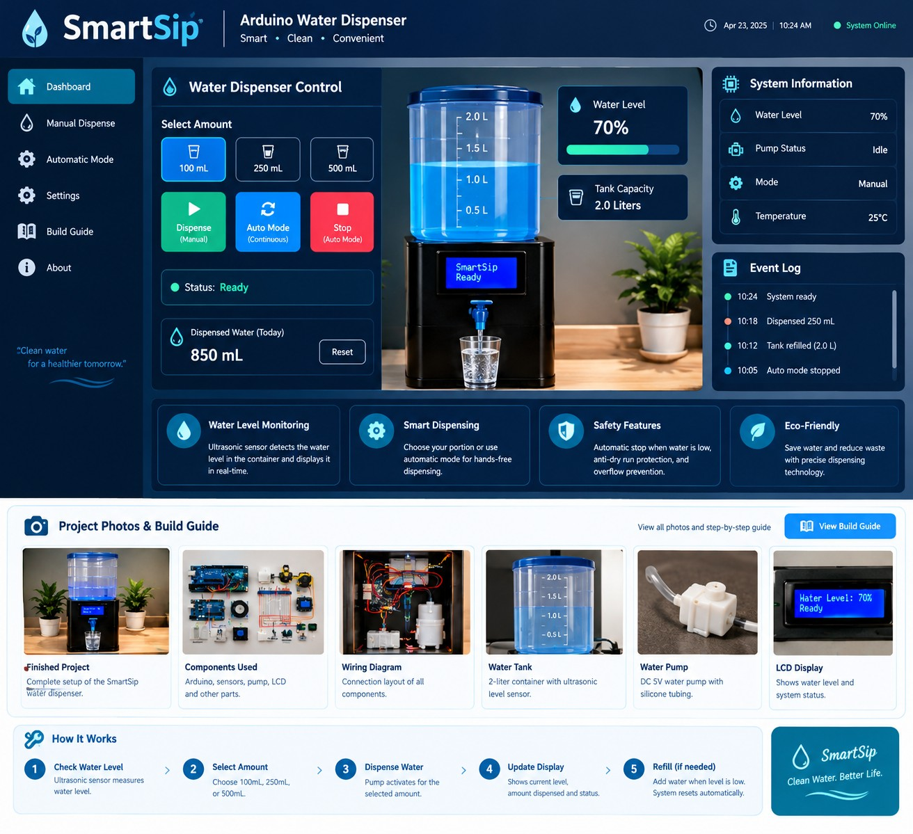
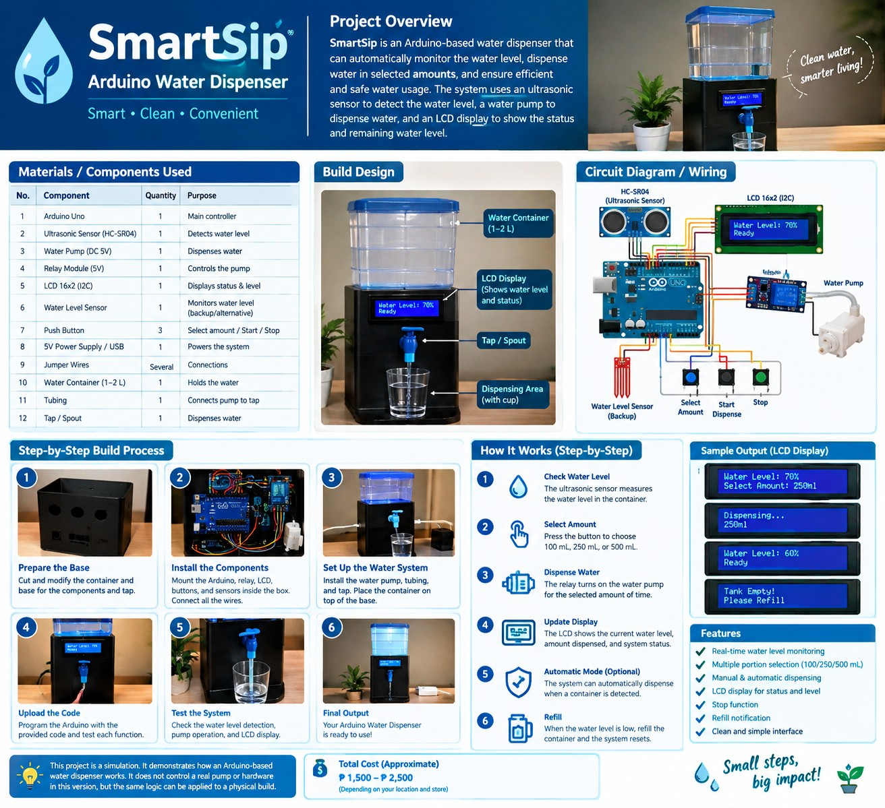

Finished dispenser concept
Full product concept image showing the tank, dispenser body, display, and cup.
Download imageThese generated concept images are included in the project assets folder. Click an image or its download link to save it and add it to your own website.

Full product concept image showing the tank, dispenser body, display, and cup.
Download image
Illustrative arrangement of the controller, sensors, pump, display, and wiring components.
Download image
A visual reference for planning the electronics layout. Confirm real module pinouts before wiring.
Download image
A close view of the transparent water container used in the concept.
Download image
A close view of the small DC pump and tubing concept.
Download imageA close view of the display concept for showing water level and system status.
Download image
Generated SmartSip interface and product concept artwork.
Download image
Full project infographic showing proposed parts, system flow, and construction stages.
Download image